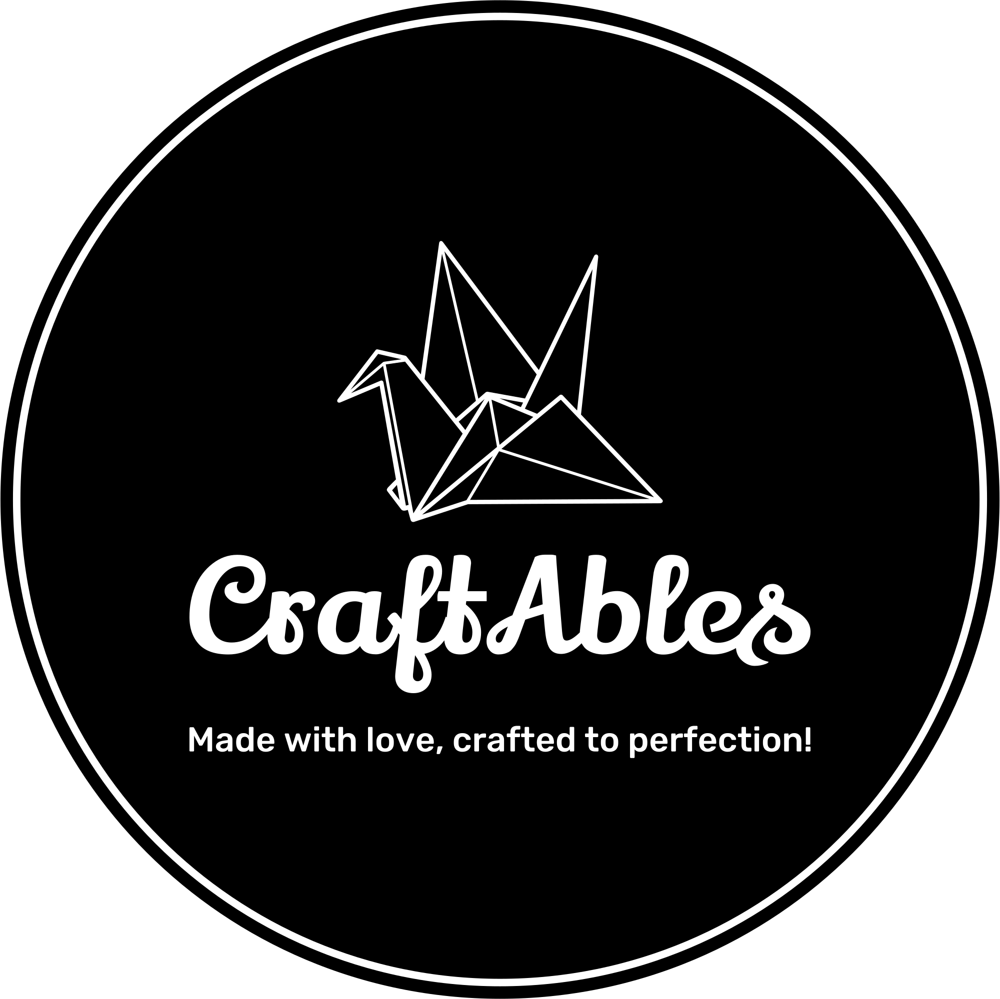

.png)
CraftAbles, a distinguished business specializing in handcrafted goods, was co-founded by Mark Samer and Freddy Magdy. The company, initially established by Mark Samer and later joined by Freddy Magdy, traces its inception to a serendipitous encounter during a leisurely moment at "Sahel." Delving into a trove of vintage handcrafted items, Mark and Freddy stumbled upon beads and strings, inspiring them to fashion a prototype: the iconic CraftAbles ring. Impressed by their creation, they envisioned sharing their craftsmanship with a broader audience, leading to the genesis of CraftAbles. Mark's fortuitous revelation to his sister sparked the idea of establishing a business focused on handmade products, a concept enthusiastically embraced by Selim Khaled during a subsequent conversation. Together, they embarked on a journey of collaborative ideation, product development, and website design. However, as challenges arose, Selim contemplated stepping away due to perceived limitations in creativity. Undeterred, Mark enlisted the expertise of Freddy Magdy, who brought invaluable contributions to the table, including innovative bracelet designs, insightful suggestions, and an unwavering dedication to the company's success. With Freddy's integral role and ownership stake in CraftAbles, alongside Mark's leadership, the duo spearheads the business, leveraging platforms like TikTok, refining website functionality, and showcasing their meticulous crocheted creations, emblematic of CraftAbles' commitment to artisanal excellence.
